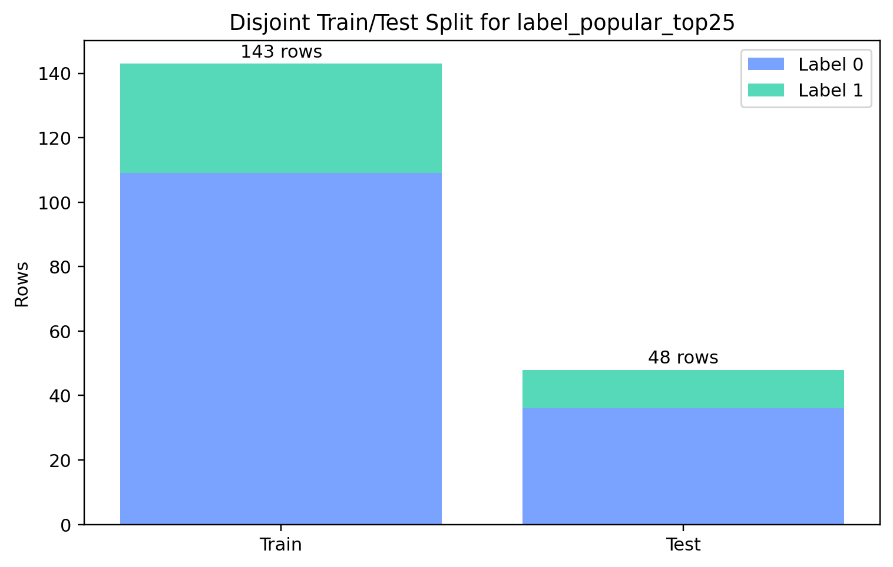
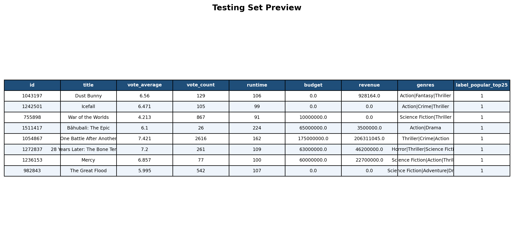
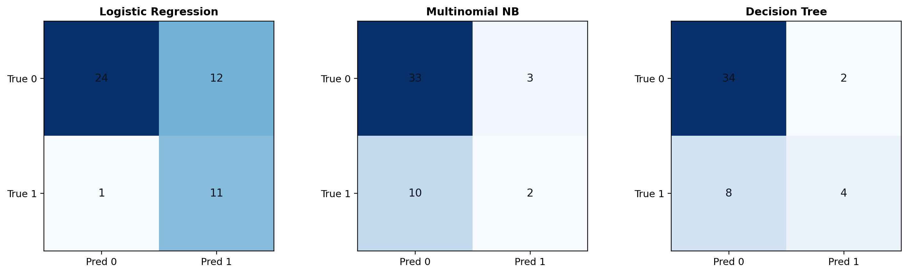
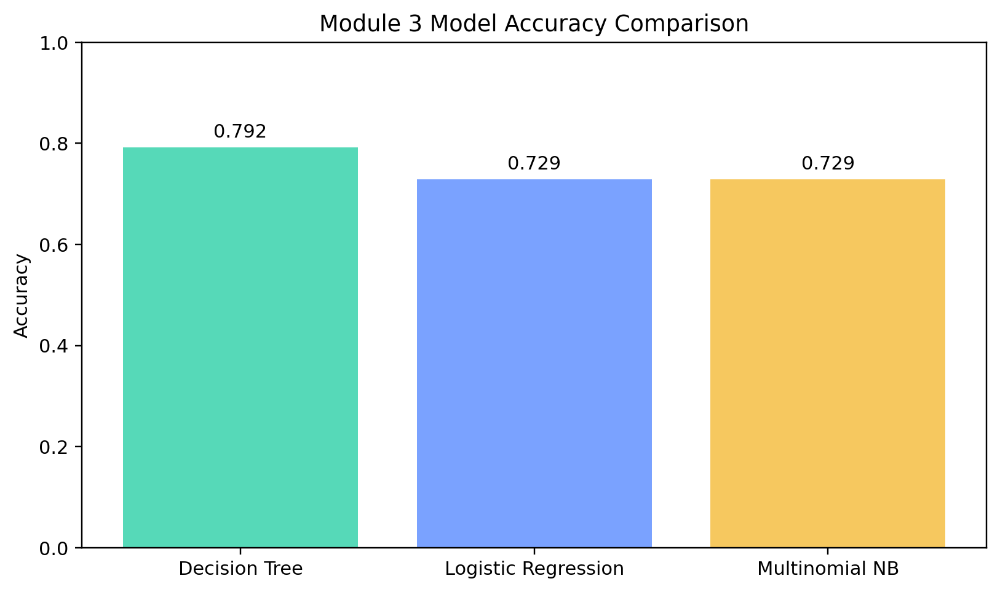

Linear regression models the relationship between one continuous target variable and one or more input features using a straight-line equation. It predicts numeric values, such as revenue, price, or temperature. The model estimates coefficients that show how much the target changes when a feature changes while the others are held constant.
Logistic regression is a classification model used when the target is categorical, especially for two classes such as yes/no or 0/1. Instead of predicting any real number directly, it predicts a probability that an observation belongs to the positive class. That probability is then converted into a class label using a threshold such as 0.5.
Both models connect features to an outcome using a weighted linear combination of inputs, so they are similar in structure and interpretation. The main difference is the output: linear regression predicts continuous values, while logistic regression predicts class probabilities for categorical outcomes. Linear regression is used for numeric prediction, but logistic regression is used for classification.
Yes. Logistic regression uses the sigmoid function to map the linear score into a probability between 0 and 1. This is what lets the model interpret the result as the probability of the positive class. Without the sigmoid, the output would not stay inside the probability range.
Logistic regression estimates its coefficients by maximizing the likelihood of the observed class labels. In simple terms, it chooses the coefficient values that make the observed training labels as probable as possible under the model. That is why logistic regression is commonly trained by minimizing log loss, which is directly connected to maximum likelihood estimation.
I chose the same binary label used throughout Module 3: label_popular_top25. This is a
valid two-category target because every movie is either in the top 25% of popularity or not. As in the
NB and DT sections, I removed duplicate movie IDs first, leaving 191 unique movies, then created a
stratified split of 143 training rows and 48 testing rows.
Logistic regression needs numeric input, so I used numeric movie features plus one-hot genre indicators. Skewed features such as vote_count, budget, and revenue were log-transformed, and then the feature set was standardized before fitting logistic regression. For the comparison portion, I evaluated logistic regression, Multinomial NB, and the best-performing decision tree on the same disjoint split.


I chose the second option for this assignment section and compared all three models: Decision Tree, Logistic Regression, and Multinomial Naive Bayes. The best model was the Decision Tree with 0.7917 accuracy. Logistic Regression and Multinomial NB both reached 0.7292 accuracy on the same held-out test set.


Logistic regression was still valuable because it gave an interpretable coefficient-based view of the data. The strongest positive coefficients were linked to release_year, budget, Adventure, and vote_average, which suggests that newer releases and some large-scale genre patterns were associated with being in the top popularity group. Even though logistic regression was not the best model here, it remains useful because the coefficients are easier to explain than a large tree.
For this project, decision trees worked best on the movie popularity label, which suggests that a small number of nonlinear split rules captured the signal better than a fully linear boundary. Logistic regression still provided a clean probabilistic baseline and a more interpretable global view of the feature effects. Overall, the comparison shows that there is usable predictive structure in the dataset, but the best-performing model depends on how that structure is represented.